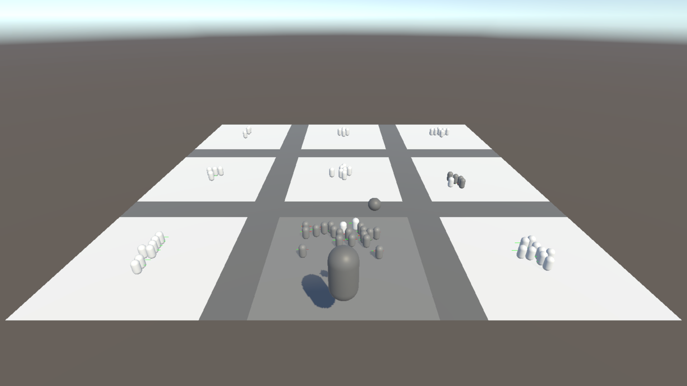

Abstract
This project was created as a group effort where we mixed each of our original ideas into one brand new idea! The goal of the game is to claim 3 squares in a row similar to Tic-Tac-Toe. However, the player must launch soldiers onto the board to claim said squares. They obtain soldiers through the shop with each square they claim adding to a passive income they can use to buy even more soldiers.
Links to Project
Role in Project
Project Manager and Programmer, January - April 2025
- Managed a group of 4 other programmers working in Unity, C#, and Trello.
- Organized the project within GitHub and solved any merge conflicts that arose.